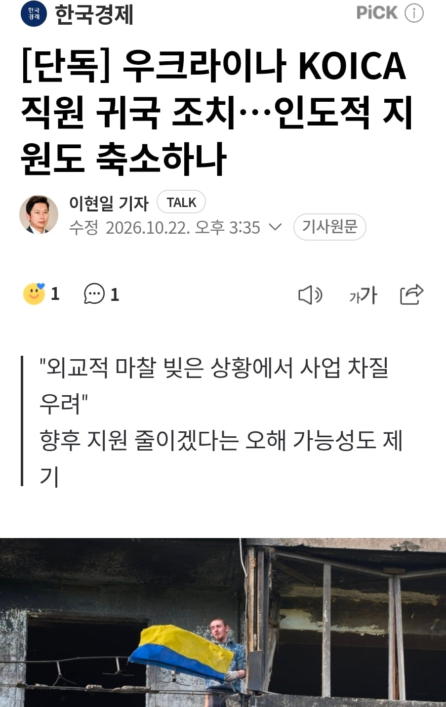

[단독] 우크라이나 KOICA 직원 귀국 조치…인도적 지원도 축소하나
댓글
쟤네 버린다고 우리가 손해볼건 없을듯.(지금까지 도와준건 손해겠지만..)
뭐 맡겨놓은냥 지랄하는 새끼들은 빨리 치워버려야..
'그딴식으로 외교'=탈북자를 한국에 보냄<<<?
비공개로 송환하기로 했는데 동네방네 다 떠들고 다니는 외교를 말하는거지
비공개로 송환하기로 했는데<<<합의문 ㅇㄷ? 굳이 합의문 아니어도 됨
녹취록, 속기록, 팩트시트, 간략한 보고서여도 상관 없음
주 우크라이나 대사의 국정감사 한번 살펴보렴
서류를 남기면 조약이 되기 때문에 남기지 않았다
우크라이나측과 최대한 비공개 하기로 합의가 되어있었다
그래서 송환 공개 후 우크라이나 측에 해명을 요구했는데 아직 입꾹닫이다
이런게 다 나왔었어요
정부가 저런 조치 취하는데 우크라이나측에서 아가리 닫고 있는 이유를 한번 생각해봐
저분 우크맘이라 알려줘도 안찾아봄
우크라맘이어서 그럴까? ㅋㅋㅋ
반례 하나로 디지게 꼬투리잡는거보면 그냥 뭔말해도 안쳐들을듯
그리고 그 반례조차 개판이잖아
이런 간단한 사건조차 문맥파악이 안됨...??
납짝 엎드려도 해줄까 말까 한 판에 뭐 잘났다고 상대국가들 긁고 다니는지 ㅋㅋㅋ
코이카는 정말 전쟁과는 상관없이 '무상협력' 을 주관하는 기관이라 저거 철수하는 건 인도적 지원도 슬슬 끊어버린다는건데. ..
러시아에 백린탄이나 지원해야지
러포티 행님아
우크라 국민들 안타깝긴한데 죽음의 상인 건들면 물건공급은 없다고 보셔야죠
김여정이 대남확성기 튼다는데 거기다 좀 강경하게 말해봐라 븅신들
얜 대체 뭐하는 사람인데 혼자 불타냐
ㄹㅇ
북한한테 찍소리 못하는건 정치적인 이유가 있다 쳐도, 우리 호구잡는 아예 남인 새끼한테는 우습게 보이면 안되지
정보:캄보디아를 상대로 찍소리 못했다
우크맘 아주 애쓴다
했잖아?
씨발 북한에도 좀 인도적 지원 줄여봐라
우크라는 존나 강경하게 하고
북한은 욕박고 꺼지라고해도 설설 기고
러시아는 북한에 기술 돈 주는데 설설 기고
뭔 병신같은 상황이냐 ㅋㅋㅋㄱ
강경 대응이 말이 안될건 없음.
애초에 포로 송환 공개가 곤란하다는 우리측 근거 중 하나가 외교 안보 영향이니까.
비공개 여부 문제랑은 별개로 걍 북한 포로 공개 조차 감당 못하겠다는게 우리 깜냥인거임.
어차피 우리가 관계 끊는다고해도 급한건 우크라고
그리 꼬우면 니가 총들고 북한으로 달려가라 ㅋㅋ
나도 개꼽긴한데 전쟁 무서워서 전쟁 안났으면 한다.ㅋㅋ
강약 약강 박쥐외교가 한국 성장 동력이었지.
이전까지는 한국보다 좁밥과 국제사회에서 놀일이 거의 없었다보니 약강이 잘 안드러났는데
이젠 좀 클라스 있으니까 약한새끼들이 기어오르면 강하게 나가는거뿐
우크라한테는 철천지 원수처럼 외교하는데 북한한테는 왜? 이 생각이 절로드네
사실 한국 입장에서는 사과안하면 고맙지 ㅋㅋㅋ 지원 다 끊을 명분도 생겼고, 나중에 전쟁 끝나면 러시아랑 다시 협력할때 아 그래도 우리는 중간에 끊었잖아 하면서 한마디 할수있고 ㅋㅋㅋ
우크라한테 한건 잘 했음
북한한테도 좀 적당한 조치 좀 해라
욕들어가면서 지원하니 마니 그러지 말고
지구 주딱이 지금 정은이랑 얘기도 좀 하고 하려고 하는데 우리나라가 보복으로 장사정포 한방 날리면 되나?
우크라 소식에 계속 북한 찾는애들은 도대체 머임? 뇌가 북한에 절여졌나
진지하게 이게 맞나 싶음.. 북조선 한테 경험치 퍼먹인거랑 우크라가 결국 졌을때를 생각하면 결국 한반도 전쟁시나리오에 그냥 악수만 쌓이는건데.. 뭔 전쟁 나면 러시아가 남한을 너무 좋아해서 북한 안돕는다는 개소리나 하고있고
기묘하다 기묘해
그딴식으로 외교하는데 우리도 액션을 보여줘야지
손해가 아예 없진 않겠지만 말도 안통하는
짐승새끼랑 대화할바에 손해좀 감수하고말지